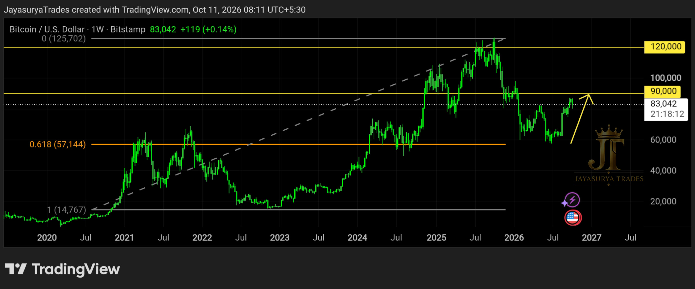
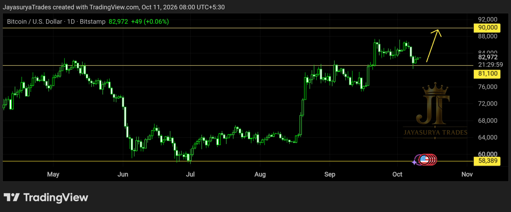

For this Sunday Market Focus, I am looking at Bitcoin (BTCUSD). In the first chart, price appears to have retraced to the 61.8% Fibonacci retracement level, often referred to as the golden ratio, and is showing a reaction from that area. From my chart perspective, this creates a potential bullish continuation scenario, provided the market sustains above the 61.8% retracement level.
In the second chart, Bitcoin has shown a rejection candle around 81,100. This is the immediate level I am watching for short-term direction. As long as price remains above this area, the potential buy-side scenario toward 90,000 remains in focus. This is a conditional view, and confirmation from price action is still important.
Longer-term chart focus: Reaction at the 61.8% Fibonacci retracement
Key short-term level: 81,100
Immediate resistance: 90,000
Next resistance: 120,000
Main condition: Watch whether price sustains above the marked support and retracement levels

Chart 1 — The 61.8% Fibonacci Retracement
The first chart shows Bitcoin taking a reaction near the 61.8% Fibonacci retracement level. I am watching this as a possible retracement completion and reversal area. If the market sustains above this level, the larger uptrend could potentially continue.
The next levels I am watching on this chart are 90,000 as Resistance 1 and 120,000 as Resistance 2. These are the levels in my current analysis, not guaranteed destinations. If price fails to sustain above the 61.8% retracement, the bullish continuation scenario would need to be reassessed.
Chart 2 — Rejection Near 81,100

In the second chart, Bitcoin has given a rejection candle around 81,100. This level is acting as the key reference point for the short-term setup I am watching. If price continues to hold above 81,100, a move toward 90,000 could potentially develop.
As long as Bitcoin remains above 81,100, I would give more attention to buy setups than sell setups, while still waiting for a suitable entry signal and keeping risk under control. If price breaks below this level, the short-term bullish scenario may weaken and the setup should be reassessed rather than forcing a buy.
Short-Term Trading — What I Am Watching
For short-term traders, lower timeframes such as the 15-minute chart or another timeframe that suits their own trading approach may help them look for entries that align with the larger market direction. The key is to avoid entering simply because price is near 81,100. Wait for the market to show a suitable setup and manage the risk on every trade.
Short-term objective: 90,000 resistance.
Below 81,100: reassess the bullish setup and wait for new price action.
Do not treat a rejection candle alone as a guarantee that price must rise.
Long-Term Investors — Manage Exposure Carefully
For people considering Bitcoin as a long-term asset, I would not suggest committing all of their capital to it. In my view, digital assets require caution even when their fundamental story and chart structure appear favourable. Bitcoin can experience substantial price changes, and an investor should only consider an allocation they can financially afford to leave invested and potentially lose.
As a personal risk-management illustration, I would consider limiting exposure to a portion of available investment capital—for example, one-tenth or half of the amount someone had originally considered allocating—rather than investing everything at once. This is not a universal allocation rule or a recommendation suitable for everyone. The appropriate amount depends on personal finances, risk tolerance, time horizon, and the ability to withstand a major loss.
I also keep an eye on long-term technology risks and uncertainty. For example, future developments in artificial intelligence or computing could change the digital-asset landscape in ways that are difficult to predict today. The idea that AI could somehow produce Bitcoin in excess of the established network rules is speculative; this analysis does not claim that such an outcome is happening or is likely. Any future technological threat would need to be assessed using credible technical evidence rather than assumptions.
Before holding Bitcoin for many years, investors should be comfortable with the possibility that the value could fall sharply and that the money may not recover. If a substantial loss would affect essential expenses or financial stability, the exposure may be too large.
The Two Scenarios I Am Watching
Bullish Continuation — 61.8% Retracement
If Bitcoin sustains above the 61.8% Fibonacci retracement level, the broader bullish continuation scenario remains relevant. In that case, 90,000 is the first resistance area I am watching, followed by 120,000 as the next resistance level identified in my chart.
Short-Term Buy Scenario — 81,100 to 90,000
If the rejection around 81,100 continues to hold and price confirms an upward move, a short-term scenario toward 90,000 may develop. If price loses 81,100, I would reassess the setup instead of assuming the upward move will continue.
Key Takeaways
- The first chart shows a reaction near the 61.8% Fibonacci retracement, also called the golden ratio.
- If Bitcoin sustains above the 61.8% retracement level, the larger uptrend could potentially continue.
- The resistance levels identified in the first chart are 90,000 and 120,000.
- The second chart shows a rejection candle near 81,100.
- While price remains above 81,100, the short-term scenario being watched is a potential move toward 90,000.
- Short-term traders should wait for a suitable lower-timeframe setup and manage risk rather than entering automatically.
- Long-term investors should avoid committing all their capital to Bitcoin and should consider their ability to withstand substantial losses.
- Future technology risks are uncertain; hypothetical scenarios should not be presented as established facts.
- These levels and scenarios are conditional and should be reassessed if price action changes.
For now, I am watching whether Bitcoin sustains above the 61.8% Fibonacci retracement on the broader chart and whether the 81,100 level continues to hold on the short-term chart. The market's reaction at these levels will matter more than assuming a direction in advance.
Respect the key levels.
Wait for confirmation.
Manage risk before thinking about targets.
One day. One market. One focused analysis.
Levels. Structure. Scenarios. Confirmation.
No hype. Just how the market behaves.
Watch. Wait. Confirm.
Risk Disclaimer
This analysis is provided for educational and informational purposes only and should not be considered financial advice or a recommendation to buy or sell any financial instrument.
Trading involves substantial risk. Always conduct your own research and follow your own trading plan and risk-management rules.